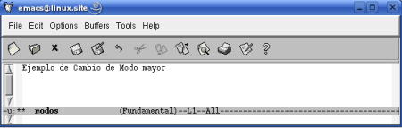
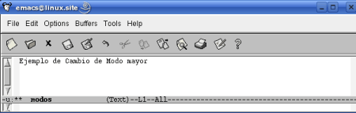
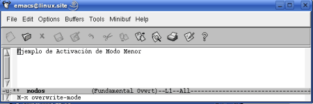

III.Modos
Pág.Anterior | Índice | Pág.Siguente
La gran versatilidad y flexibilidad de que puede presumir Emacs se debe, en gran medida, a que nos proporciona varios modos de edición.
Mediante dichos modos de edición es como conseguimos que Emacs se adapte a la tarea concreta que estamos desarrollando.
Tiene un modo texto, para la redacción; modos de programación, para los distintos lenguajes ( Java, C. Perl....), un modo mail, para enviar y recibir correo....etc.
Los modos "transforman" Emacs en el editor (...o el entorno) adecuado al tipo de tarea que estemos realizando en cada momento.
Debemos distinguir dos tipos de modos :
- Modos Mayores.
- Modos Menores.
Veamos, brevemente, las características de cada uno de ellos.
III.i.Modos Mayores
Pág.Anterior | Índice | Inicio Página | Pág.Siguente
Todo buffer debe tener ún y solo ún modo mayor activado en cada momento.
Lo anterior significa que, si nos encontramos en un determinado modo mayor, por ejemplo, en perl-mode, y deseamos salir de él deberemos, necesariamente, activar otro modo mayor.
Emacs se inicia siempre con un modo mayor por defecto: fundamental-mode.
Emacs, en su linea de modo [IV.v] nos muestra el modo mayor activo, con el que estamos operando. Su nombre se presenta entre paréntesis.
Siempre que se edite un archivo, Emacs intentará activar, automáticamente, el modo adecuado para su edición. Por ejemplo, si se edita un archivo con la extensión .html, Emacs activará el modo html-mode. Si no pudiera identificar un modo específico, activará el modo por defecto: fundamental-mode.
Anteriormente hemos definido a Emacs como un editor extensible. Hablando de modos, esto significa que permite la agregación otros modos mayores, distintos a los que vienen, inicialmente, con la aplicación.
III.ii.Modos Menores
Pág.Anterior | Índice | Inicio Página | Pág.Siguente
Además de los modos mayores, Emacs dispone también de unos denominados modos menores..
Los modos menores nos definen aspectos concretos del entorno de Emacs.
Pueden activarse y desactivarse dentro del modo mayor en el que estemos trabajando. Por ejemplo, activando el paragraph-indent-text-mode se activará el sangrado de la primera linea de cada párrafo, activando el artist-mode podremos realizar dibujos utilizando el ratón...etc.
III.iii.Descripción de algunos Modos.
Pág.Anterior | Índice | Inicio Página | Pág.Siguente
Seguidamente se relacionan los modos mayores y los modos menores más habituales.
Modos Mayores:
- fundamental-mode: Es el modo por defecto.
- text-mode: Edición de texto.
- view-mode: Para el visionado de archivos, pero no edición.
- shell-mode: Para utilizar una shell desde Emacs.
- indent-text-mode: Sangrado automático de texto.
- paragraph-indent-text-mode: Sangra la primera linea de cada párrafo.
- picture-mode: Crea gráficos ASCII usando el ratón.
- lips-mode: Escribir programas en Lisp.
- compilation-mode: Para compilar programas.
- sgml-mode: Escribir SGML .
- html-mode: Escribir HTML .
Modos Menores:
- overwrite-mode: Sobreescribe en lugar de insertar.
- auto-save-mode:Guarda automaticamente en un archivo especial.
- isearch-mode: Para búsquedas.
- abbrev-mode: Permite la utilización de abreviaturas.
- paragraph-indent-text-mode: Sangra la primera linea de cada párrafo.
- refill-mode: Intenta "llenar" los párrafos tal como se editan.
- artist-mode: Crea gráficos ASCII usando el ratón.
- compilation-mode: Para compilar programas.
Existen algunos modos que pueden comportarse como modos mayores o como modos menores. Pueden utilizarse solos, como modos mayores, o con otro modo mayor, actuando entonces como modo menor.
III.iv.Cambio, Activación y Desactivación de Modos.
Pág.Anterior | Índice | Inicio Página | Pág.Siguente
Cuando nos refiramos a modos mayores hablaremos de cambio de modo.
En el caso de los modos menores, hablaremos de activación y desactivación del modo.
Para cambiar de Modo Mayor ejecutaremos el siguiente comando:
- M-x nombre_nuevo_modo <Enter>
Veamos un ejemplo, que nos servirá también como una introducción a la ejecución de comandos en Emacs:
Tenemos el siguiente buffer que se encuentra en el modo por defecto: fundamental-mode.
Puede observarse como, en la parte indferior de la ventana, en la linea de modo [IV.v] , se nos muestra, entre paréntesis, el nombre del modo mayor activo: (Fundamental).
|  |
Tecleamos el comando, M-x : El cursor pasa a la zona del mini-buffer [IV.vi] de la ventana de Emacs (zona inferior de la ventana), junto al nombre del comando introducido.
 |
Seguidamente introducimos el nombre del modo al que queremos cambiar. En este ejemplo, cambiaremos a text-mode:
Pulsamos <Enter> y se produce el cambio de modo.
Podemos observar como en la linea de modo [IV.v] se ha sustituido (Fundamental) por el nombre del nuevo modo, (Text):
|  |
Para la Activación de un Modo Menor se utiliza el mismo comando que para el cámbio de Modo Mayor:
- M-x nombre_modo_menor <Enter>
Para la Desactivación de un Modo Menor se utiliza exactamente el mismo comando que se utilizó para su activación.
Veamos un ejemplo de activación y desactivación del modo menor overwrite-mode:
Para la activación del modo overwrite-mode, tecleamos el comando M-x e introducimos el nombre del modo:
Pulsamos <Enter> y se produce la activación del modo.
Podemos ver como el nombre del modo menor activado aparece junto al del modo mayor : (Fundamental Ovwrt )
Para su desactivación seguiriamos la misma secuencia que para su activación:
|  |